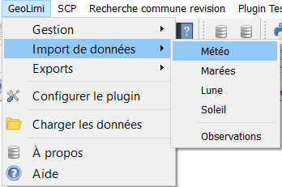
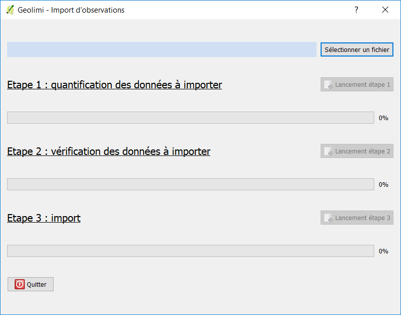

l'import de données
Exemple sur l'import d'observations, identique sur les autres imports

L’import des données est mis en place via le menu import. En cliquant sur l’import souhaité, une fenêtre apparaît.

L’import est divisé en plusieurs parties :
-Le choix du chemin où aller chercher le fichier CSV contenant les données à importer. L’import n’est possible que depuis un fichier en .csv
-L’étape 1 qui est la quantification des données à importer. À cette étape le plug-in parcourt le fichier et analyse le nombre de lignes à insérer.
-L’étape 2 qui est la vérification des données. Ici le plug-in va comparer les données à importer avec les données présentes dans la base.
Il n’insérera que les lignes qui ne sont pas présentes dans la base. Cependant les lignes vides, ou invalides seront mises de côté systématiquement.
Le paramètre essentiel à l’import d’une observation est un logger, une date, une heure et une position géographique
-L’étape 3 est l’implantation des nouvelles données dans la base.